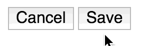

...
65 Things You Can Do Right Now To Build Better Websites
Table of contents
Javascript
No globals
By default, Javascript sets variables on the global scope. In the browser, this is the window object. You can use function scopes for encapsulation, a module loader, or a transpiler (ES6, Coffeescript) that will automatically scope modules.
No globals
// Good
(function(){
// variables are contained!
})();
// Bad
var a = 1;
// a is available everywhere in this file,
// and others if multiple scripts are available on a page.
Don't store data in the DOM
Like hidden divs with values. It's very 1990s.
Don't store data in the DOM
{user: 'ian', id: 7002}
// Javascript
var UserModel = JSON.parse($('.the-data').val()); // :(
Triple equals for equality
Avoid implicit type conversion with double equals.
=== or bust.
Triple equals for equality
1 === 1
// True
1 === '1'
// False
// --- Noooo! ---
1 == '1'
// True
Use friendly type conversion
Forget parseInt() and !!.
Use Number(), Boolean() or String() to do type conversion.
Number('3.14159');
Boolean([1]);
String(500);
Use simple constructors
[] not new Array()
{} not new Object()
typeof is unreliable
To determine the type of a variable, avoid using typeof.
| Actual type | typeof |
|---|---|
| Object | 'object' |
| Array | 'object' |
| Function | 'function' |
| String | 'string' |
| Number | 'number' |
| Boolean | 'boolean' |
| null | 'object' |
| undefined | 'undefined' |
Be prudent when choosing switch statements
Switches are great for multiple cases mapping to the same value. They're often misused as large if/else if/else blocks.
If you do use one, it's best practice to just set a variable. Also break on every case besides default. Also, don't return in a case statement.
https://developer.mozilla.org/en-US/docs/Web/JavaScript/Reference/Statements/switchBe prudent when choosing switch statements
var chosenValue;
switch (someValue) {
case 'one-thing':
case 'another-thing':
chosenValue = 1;
break;
case 'third-thing':
chosenValue = 2;
break;
case default:
chosenValue = 0;
}
return chosenValue;
Use dot notation on objects
... except when it's not possible.
var object = {
dottableKey: 100,
'not-dottable-key-why-do-this': -1000
};
// Good
object.dottableKey
object['not-dottable-key-why-do-this']
// Bad
object['dottableKey']
// Impossible
object.not-dottable-key-why-do-this
Libraries are your friend
Don't try to reinvent the wheel. There are several libraries that fill in the gaps left in the language. Libraries like lodash, underscore and moment have great APIs and are well tested.
Libraries are your friend
var fn = function(){};
var time = 250;
_.debounce(fn, time);
// vs
var debounce = function(fn, time){
var timeout, args, context, timestamp, result;
var later = function() {
var last = _.now() - timestamp;
if (last < wait && last >= 0) {
timeout = setTimeout(later, wait - last);
} else {
timeout = null;
if (!immediate) {
result = func.apply(context, args);
if (!timeout) context = args = null;
}
}
};
return function() {
context = this;
args = arguments;
timestamp = _.now();
var callNow = immediate && !timeout;
if (!timeout) timeout = setTimeout(later, wait);
if (callNow) {
result = func.apply(context, args);
context = args = null;
}
return result;
};
}
debounce(fn, time);
Avoid document.write
document.write(), if called after page load, will completely wipe out the DOM. Forget its name.
Avoid manual optimization
There's a whole level of parsing a browser does, so don't sweat variable names, for vs while loops and the like.
Avoid manual optimization
Demo from IRHydra 2
function (v) {
var sum = 0;
for (var i = 0; i < 1e5; i++) sum += len(v);
return sum;
}
Compiles to...
Avoid manual optimization
B0
v0
BlockEntry
s161
Constant 1 [1, 1]
t15
Constant 0x5c5080b1 boolean
t5
Constant 0x5c508091
t1
Context
t2
Parameter 0
t3
Parameter 1
v6
Simulate id=2 var[4] = t5, var[3] = t5, var[2] = t1, var[1] = t3, var[0] = t2
v7
Goto B1
// ... for 100s of lines
Clean up your timeouts and intervals
If you're using setTimeout (or setInterval), make sure to clean them up when you're done.
var timeoutProcessId = window.setTimeout(function(){}, 1000);
// ... something happens, don't need it any more
window.clearTimeout(timeoutProcessId);
Event listeners bubble up
You can set event listeners on parents, instead of multiple child elements. It'll make scaling and memory management much easier.
Event listeners bubble up
- Clicked one!
- Clicked two!
document.getElementById('my-list').addEventListener('click', function(event){
console.log(event.target.innerHTML);
});
Click the first one, and see "Clicked one!" in the console.
The event loop
Event loopsGet to know how the javascript event loops. That video may change your life.
For instance, getting expensive tasks out of the way (like DOM manipulation) will positively effect performance.
Leave console.log to dev
console.log() is a helpful debugging tool, but it's known to crash older browsers. It's also generally ugly in a production app.
Styles
Includes CSS and Sass (noted on each slide).
Can apply to any preprocessorsThe C is for cascade
Style rules cascade. Early rules preceed later ones in specifity.
Resist !important
Adding !important after a rule will override any other rules, regardless of specificity.
If you find yourself using it, you probably have a scope issue. Try refactoring your selectors first.
Don't overqualify selectors
Tags are overkill, so instead of targeting div.some-class, just use the class: .some-class.
Keep nesting to 3 levels at most
(Sass)Too much nesting in Sass creates long, over-qualified selectors. A good rule of thumb is to go no deeper than three levels, i.e.,
Keep nesting to 3 levels at most
.class .child-one .link {
color: pink;
}
Organize your style
Using a methology, be it BEM, Smacss, or any other, will help keep styles maintainable as your codebase scales.
Organize your style
BEM example
Organize your style
// BEM example css
.post {
font-size: 1.6rem;
}
.post__content {
line-height: 1.2;
}
.post__button {
border-radius: 50%;
}
.post__button--like {
color: blue;
content: 'Thumb';
}
.post__button--share {
color: grey;
content: 'Envelope';
}
Scope styles
(Sass)If you're not using BEM, Suit or another convention, each module/component/widget's styles should be contained in a style block
.container {
.container-item {
// ...
}
}
Use modular styles
Break components out into their own style sheets.
Import them into a master file. (Example below)
Sass @imports
(Sass)Sass can import other Sass files, which is very handy for variables and constants. If you're importing other rules and styles into multiple files, you're creating duplicate code.
Import all your files into main.sass, and compile it to one file at main.css*
Sass @imports
// main.sass
// global
@import 'variables';
@import 'colors';
@import 'typography';
@import 'layout';
// components
@import 'components/one';
@import 'components/two';
// Terminal (not actual syntax)
$ sass --input main.sass --output main.css
// index.html
Some selectors are faster than others
Class lookup is the fastest. Complicated selectors like:
.thing + .child-thing:nth-of-type:not(.other-things) {
// ... :(
}
Can take real time
Smooth out browser defaults
Use normalize.css to make every browser's default styles the same.
Automate browser prefixing
Use a tool to handle browser prefixing for you. See autoprefixer or prefix-free
Use variables
Make refactoring easier. Let everyone else forget that white may be #FFF or #DDD. They just know $white.
$white: #FFF;
// in another file
.container {
background-color: $white;
}
Use mixins responsibly
Mixins can help, but be mindful of the generated CSS. It can create a lot of rules.
SassProperty animation
There are three cycles a browser goes through when a CSS property changes: layout, paint and composite. Performing them all is expensive.
Animating should only be on transform and opacity, since they only trigger compositing.
0 means zero units
If a properties should be zero, like margin: 0, don't put a unit like px on it. Just zero. Trust.
Line-height is a unit-less number
Use unit-less numbers for line height. It's a multiplier of the font size.
Use border box sizing
With box sizing set to border box, margin and padding are considered when calculating the element's size. The default, content-box, does not.
Pseudo classes and pseudo elements are great
:before, :after, :checked, :valid and many more will make your life easier and reduce your dependency on javascript.
Turn off user-select on button wrapper
If you've got a container wrapping buttons, and the user clicks that container, not the button, you'll get a blue highlight:
Turn off user-select on button wrapper
Turn it off:
.container {
user-select: none;
}
Use relative units
Using REMs or EMs means sizing will adjust with font-scaling and on mobile devices. It's also an accessibility win.
While em is relative to the font-size of its direct or nearest parent, rem is only relative to the html (root) font-size.
Use relative units
html {
font-size: 62.5%;
}
body {
font-size: 1.6rem; // 16px
}
Font-face, with fallbacks
To define custom fonts, use @font-face. Also provide fallbacks for when fonts load later or not at all.
Font-face, with fallbacks
html {
font-family: "StrukturProBold", Arial, Helvetica, FreeSans, sans-serif, "open-serif", open-serif;
}
Get hip to Flexbox
Flexible layouts are the present and future. You can use it for grids, layouts and components. Stop floating; start flexing.
Establish a vertical rhythm
If your site doesn't have standard sizes for headings and paragraphs, make them.
HTML
Use HTML5
Descriptive elements! Less typing!
Be semantic
Use the correct elements. Each tag should suit its purpose.
Omit types
In script and stylesheet tags, you can omit type="" in HTML5.
Roles
Use roles for non-semantic elements
See: Implied aria roles, Defined rolesRoles
Make it accessible
Use aria labels, semantic markup, and ensure you make the checklist or pass tool validation.
Don't use HTML for style
Instead of using a br, add some margin or padding in CSS.
HTML describes the structure, not the presentation.
No tables
Is it tabular data? Maybe. Just for a layout? Please don't.
Inline styles?
They're the worst. Throw styles in a stylesheet.
Meta tags are good for social & search
Allow your site to shine on search engineers and social media posts. Use meta tags.
Meta tags are good for social & search
Meta tags are good for social & search
Close tags
Unclosed tags can cause bugs that are hard to track down. Some self close, some need closing tags. Either way, shut. it. down.
Tie labels to inputs
I want to click the words next to the input. HTML gives you that for free. Leverage it!

Tie labels to inputs
Load files asynchronously
Only allow blocking scripts when necessary. Use async and defer tags when possible, and move script tags out of the head.
Load files asynchronously
Responsive images
Use the picture element, with img fallbacks for images. It'll save bandwidth on slower connections and allow higher resolutions for retina screens.
Write for modern browsers
Don't punish up-to-date users. Progressively enhance your site or use shims to start using the latest and greatest.